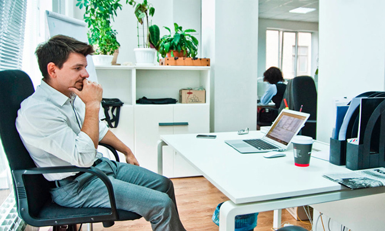

TOP-8 məsləhət – işini sevməyənlər üçün.
Sevmədiyin işdə çalışmaq çox çətindir. Yeni həftəyə pis əhval-ruhiyyə ilə başlayırsan və bütün həftəni cüməni gözləməklə keçirirsən. Hətta istirahət günlərində də aşağı maaş, zəhlətökən həmkarlar, despot rəis və işin digər “gözəllikləri” barədə fikirlərdən uzaqlaşa bilmirsən. Tanış gəlir? Deməli, bu məqalə sənin üçündür!
Daimi narazılıq və narahatlıq hissi ilə yaşamaq təkcə kədərli deyil. Bu, həm də sağlamlıq üçün zərərlidir. Emosional narahatlıq zamanla fiziki hal alır. Peşəkar yanma – həqiqi diaqnozdur və onunla mübarizə aparmaqdan daha asan olan, qarşısını almaqdır. Əgər fəaliyyətini və ya iş yerini dəyişmək variantı sənə indi uyğun deyilsə, özünü yenidən qurmağa çalış. Mövcud vəziyyətdə daha çox məmnuniyyət əldə etməyi öyrən. Bunun üçün bizim məsləhətlərdən istifadə et.
1.Özünü nailiyyətlərə motivasiya et
Yaxşıdır ki, pul səni işə getməyə motivasiya etsin. Amma əgər bu, yeganə səbəbdirsə, tez bir zamanda darıxacaq və karyerana marağını itirəcəksən. Buna görə də yalnız qazanca köklənmə. Bu vəzifədə hansı zirvələrə çatmaq istədiyini düşün. Daim yeni bir şey öyrənməli, aktual bacarıqlar qazanmalı, maraqlı tanışlıqlar qurmalı və hər cür inkişaf etməlisən. Ancaq bu yolla işini sevmək və əla mütəxəssis olmaq mümkündür.
2. Səlahiyyətlərini yenidən nəzərdən keçir
Əgər sən həddindən artıq mürəkkəb tapşırıqlarla yüklənmisənsə və bir dəqiqə belə dincələ bilmirsənsə – bu, pisdir. Amma tam əksinə, ağlını işə qoşmadan avtomatik yerinə yetirdiyin çox sadə rutin də işə marağı artırmır. Ola bilsin ki, sənə tapşırıqların dairəsini, qrafiki və ya hətta vəzifəni dəyişmək lazımdır. Daha çox azadlıq qazanmaq və ya əksinə, daha çox məsuliyyət götürmək. Rəhbərliklə danış. Birlikdə fikirləşin ki, sən şirkət üçün necə maksimum faydalı ola bilərsən.
Bununla yanaşı, öz vəzifələrinə də yeni baxış bucağından yanaşa bilərsən. Onların çərçivəsində maraqlı bir “çelenc” qur və onu keçməyə çalış. Həmişə adi tapşırıqların həllinə daha yaradıcı və qeyri-adi yollar axtar.
3. İşinin nəyə görə vacib olduğunu müəyyən et
Hər bir fəaliyyətdə müəyyən bir məna olmalıdır. Əgər sən bunu işində görmürsənsə, onu sevə bilməyəcəksən. Kollektivə aid olduğunu hiss etmək və hansısa məqsədə doğru getdiyini dərk etmək vacibdir. İşinin başqalarına – həmkarlara, partnyorlara, müştərilərə, ümumiyyətlə, cəmiyyətə – hansı fayda verdiyini düşün. Hansı yaxşı işi gördüyünü və məhz sənin bunu niyə bu qədər səmərəli görə bildiyini anla. Bu, sənə yaxşı bir həvəs qaynağı ola bilər.
4.Balans tap
Çox vacibdir ki, sabitliklə xaos arasında balans saxlayasan. Daim müəyyən çərçivələrdə qalmaq və onlardan kənara çıxmaqdan qorxmaq olmaz. Amma işində müəyyən bir nizam da mütləq olmalıdır, əks halda özünlə harmoniya tapmaq çətinləşəcək. Hər iki ifrat – tam monotonluq da, tamamilə gözlənilməzlik də – karyeradan zövq almağa mane olur.
Əgər rutində ilişib qalmısansa, ona müxtəliflik qat: gündəlik rejimdə, iş əməliyyatlarının ardıcıllığında və ya ətraf mühitdə dəyişiklik et. Mümkün qədər yeni və maraqlı məlumat əldə etməyə çalış. Vaxtın varsa, onlayn kurslara yazıl və paralel olaraq yeni bir peşə öyrən və ya ixtisasını artır ki, səlahiyyət dairəni genişləndirəsən.
Əgər əsas düşmənin xaosdursa, qrafiki nizama sal və ona ciddi əməl et. Vacib tapşırıqlarla yanaşı tam dincəlməyə də vaxt ayır. Onsuz səmərəli işləmək mümkün deyil.
5.Qələbələrini qeyd et
Ətrafdakılardan təqdir görmək əla motivasiya ola bilər. Amma yalnız ona güvənmək düzgün deyil. Özünü də, hətta ən kiçik nailiyyətlərin üçün belə, təqdir etmək haqqına maliksən. Səni ləyaqətli mükafat motivasiya etsin: sevdiyin yemək, maraqlı film, çoxdan gözlədiyin alış-veriş və ya sadəcə yataqda keçirdiyin tənbəl bir gün. Özünü mütəmadi olaraq belə xoş xırda şeylərlə mükafatlandır, onda yeni iş həftəsinə başlamaq daha asan olacaq.
6.Həmkarlarının dəstəyini qazan
Birləşmiş, mehriban komandada işləmək, bir-birini sevməyən kollektivdə işləməkdən qat-qat xoşdur. Sən də ofisdə mühiti yaxşılaşdırmağa kömək edə bilərsən. Həmkarlarınla daha çox ünsiyyət qur, aranızda ortaq məqamlar axtar. Bu, hətta işə qarşı ümumi antipatiya da ola bilər. Birlikdə bütün çətinlikləri aşmaq və fəaliyyətində müsbət tərəflər tapmaq daha asan olacaq. Şirkətin məhsuldarlığı da artacaq ki, bu da hamınıza müsbət təsir göstərəcək. İşdə dostlar qazan, onda ora getmək daha maraqlı olacaq.
7.Qayda-qanun yarat
İlk növbədə iş yerində. Kompüterini və stolunu lazımsız əşyalardan təmizlə, hər şeyi özünə rahat olacaq şəkildə düz. Əhvalını qaldıracaq bir neçə simpatiya doğuran detal əlavə et. Sonra iş rutinini nizama sal. Əgər hansısa proqram, avadanlıq və ya vasitə ilə tapşırıqlarını asanlaşdıra bilirsənsə, bunu mütləq et. İşin bütün mərhələlərində maksimum komforta nail olmağa çalış. Beləcə, daha çox boş vaxtın və pozitiv emosiyaların olacaq.
8.Təkcə işlə yaşama

Əgər günlərin yalnız karyeradan ibarətdirsə, ən maraqlı iş belə narazılıq yarada bilər. Buna görə də həyatını şirkət xaricində zəngin, rəngarəng və müxtəlif et. Şəxsi həyat, dostlar, hobbi, istirahət – bütün sahələrə diqqət yetir.
İnkişaf et, yeni təcrübələr əldə et, yaxşı dincəlməyi unutma. İş barədə 24/7 düşünmə. Ofisdən çıxanda mənfi fikirləri orada burax. Bəlkə zamanla bu işi sevməyə başlayarsan. Əgər yox, heç vaxt dəyişmək üçün gec deyil.
Sən karyeranı dəyişmək və ya içində konkret bir şeyi dəyişdirmək istərdin?